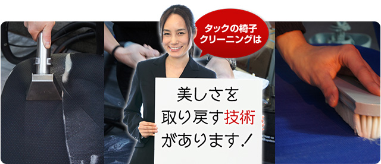
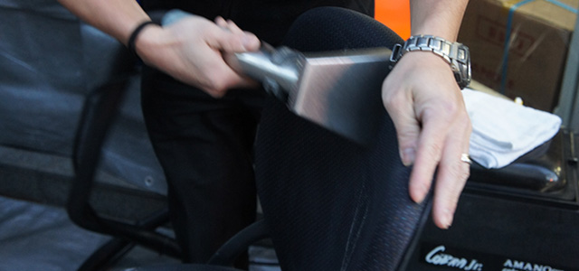
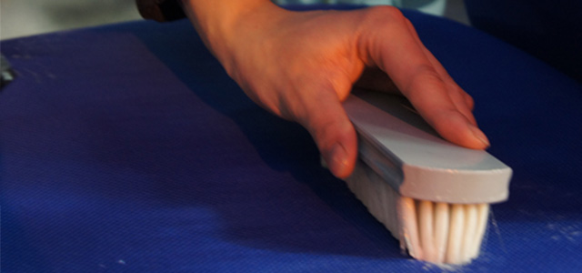

椅子クリーニング技法 タックオリジナル「椅子クリーニングPLUS」
椅子クリーニングのプロフェッショナル
東京の職人集団タック

椅子のクリーニングの方法はご家庭であれば中性洗剤を使ってブラッシングするのが最も一般的なタイプかと思います。一方で、私たちのような専門業者が行う洗浄方法は通常スチーム式の洗浄機器を用いるタイプになります。タックでは数多くの洗浄機を使う中で、最も優れているUS PURODUCTS社のエクストラクターを使っています。

更にスチーム洗浄に当社独自のノウハウを追加した方法を「椅子クリーニングPLUS」と名付けて活用しています。他の業者に依頼しても落ちなかった汚れがこの方法を用いることによってキレイに再生するといった様々な実績を積み重ねている手法になります。「買い替える前に一度クリーニングしてみたい」「思い入れのある家具を長持ちさせたい」といったご要望のあるお客様は是非お問い合わせください。
キレイの秘訣
～椅子クリーニングの特徴～
-

- 新品のような鮮やかな色調と色合いを再現
高温スチーム洗浄でのクリーニング方式だから見ばえが明るく、衛生的。
仕上がり後は新品さながらの鮮やかな色調と色合いを保ちます。
-

- 高温スチームで洗浄力アップ
洗浄力は、水よりも温水の方が高いということは生活経験などにより広く知られていますが、高温スチームはそれよりもさらに強力です。
-

- 脱臭・殺菌・害虫駆除などにも効果を発揮
高温スチームを使用することで脱臭、殺菌、害虫駆除に抜群の効果があり、なおかつ衛生的です。普段のお手入れではカバーできない問題点までクリアします。
大切な椅子を蘇らせる「椅子クリーニングPLUS」
オフィス家具 オフィスチェアのロングライフ化のためのクリーニング
オフィス家具を取り巻く環境も以前のように安価な製品を購入して数年間で買い替えるという形から、良い製品を長持ちさせるという方向へとトレンドがシフトしてきています。こうした傾向をうけて当社では法人様からのオフィス家具、特にオフィスチェアの大量クリーニングも承っております。オフィス家具メーカー様、オフィス家具販売店様はお気軽にお問合せください。

椅子の種類
タックでは様々な種類の椅子クリーニングに関する実績を持っています。
「この椅子はクリーニングが出来るの？」といった疑問や質問がありましたらお気軽にお問い合わせください。
- ダイニングチェア
- パーソナルチェア
- スツール
- オフィスチェア 事務椅子
- エグゼクティブチェア
- ミーティングチェア
椅子クリーニング価格
椅子クリーニングの価格にもタックは自信を持っています。年間30,000脚を超える都内トップクラスの作業量があるからこそ実現できるリーズナブルな価格設定です。格安を売りにする事業者様もいらっしゃるようですが、当社はあくまでも価格と品質のバランスに拘ります。
布椅子・小椅子(座面のみの場合)
| 数量・サイズ |
価格 |
| 1～10脚 |
最低一式料金20,000円～ |
| ～20脚 |
1脚あたり 1,900円～ |
| ～30脚 |
1脚あたり 1,800円～ |
| ～40脚 |
1脚あたり 1,700円～ |
| ～50脚 |
1脚あたり 1,600円～ |
| ～80脚 |
1脚あたり 1,500円～ |
ベンチシート(店舗)
| 数量・サイズ |
価格 |
| 2人掛け用 |
4,500円～ |
| 3人掛け用 |
5,500円～ |
| 4人掛け用 |
6,500円～ |
| 5人掛け用 |
7,500円～ |
| 6人掛け用 |
8,500円～ |
応接セット
| 数量・サイズ |
価格 |
| 安楽3人掛け用 |
13,000円～ |
| 安楽1人掛け用 |
6,500円～ |
事務椅子（肘なし）
| 数量・サイズ |
価格 |
| 1～10脚 |
最低一式料金 21,000円 |
| ～20脚 |
1脚あたり 2.000円～ |
| ～30脚 |
1脚あたり 1,900円～ |
| ～40脚 |
1脚あたり 1,800円～ |
| ～50脚 |
1脚あたり 1,700円～ |
| ～80脚 |
1脚あたり 1,600円～ |
事務椅子（肘あり）
| 数量・サイズ |
価格 |
| 1～10脚 |
最低一式料金 22,000円 |
| ～20脚 |
1脚あたり 2,100円～ |
| ～30脚 |
1脚あたり 2,000円～ |
| ～40脚 |
1脚あたり 1900円～ |
| ～50脚 |
1脚あたり 1,800円～ |
| ～80脚 |
1脚あたり 1,700円～ |
革椅子
お問い合わせください